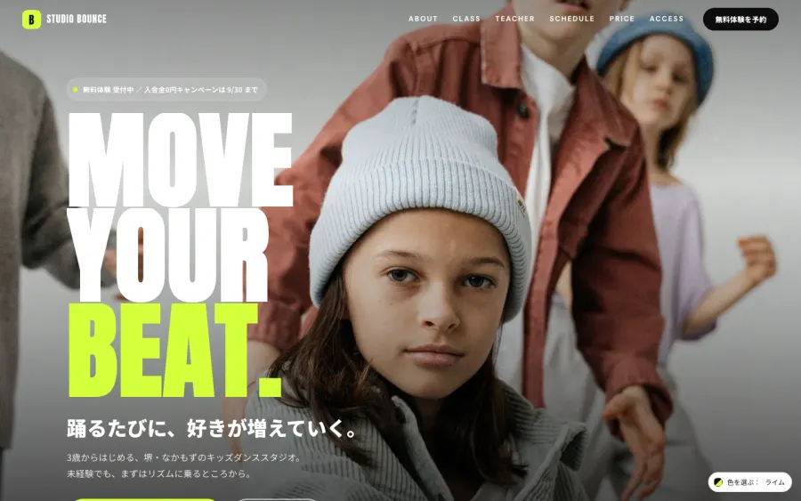
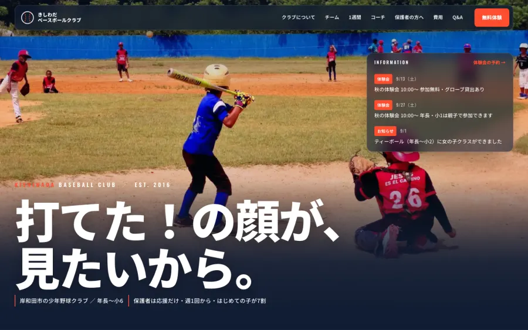
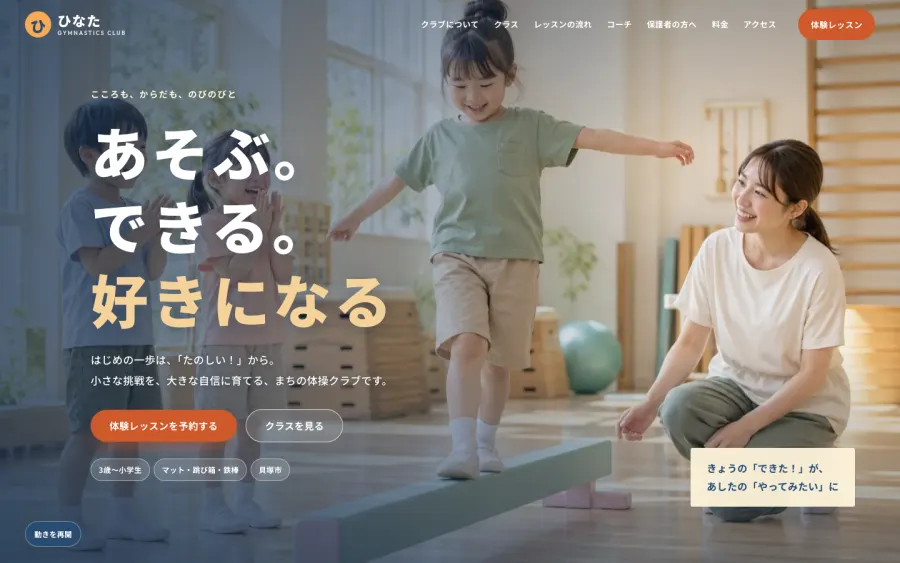
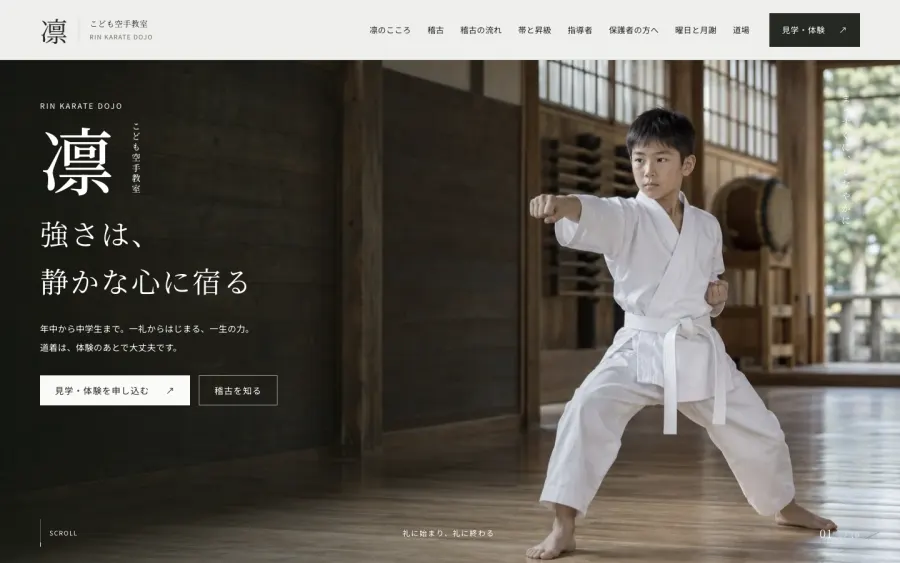
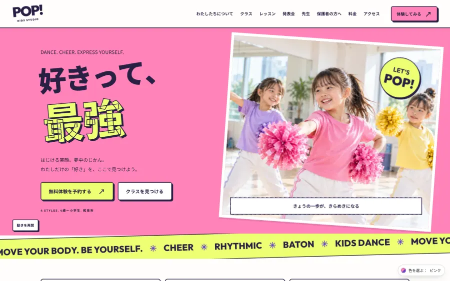

見本あり01
ストリート
かっこいい・とがった・都会的
黒い背景に、蛍光色のアクセント。英語の大きな文字を主役にして、写真は横に流して見せます。中高生や、発表会・大会をめざすクラブに向きます。
- 色
- 3色から選べます。ロゴがあれば合わせて調整します
- 向く
- ダンス・ダブルダッチ・バスケ・チア・スケートボード
STEP 1
載せる項目（クラス紹介・コーチ・練習日・費用・体験の申込フォームなど）は、どのデザインでも同じです。写真と色と文字の見え方だけが変わります。迷ったら、いま使っているチラシやユニフォームの色に近いものを選んでください。

見本ありかっこいい・とがった・都会的
黒い背景に、蛍光色のアクセント。英語の大きな文字を主役にして、写真は横に流して見せます。中高生や、発表会・大会をめざすクラブに向きます。

見本あり力強い・まっすぐ・信頼感
試合の写真を画面いっぱいに使い、その上に日本語の大きな見出しを重ねます。体験会の日程が最初に目に入る作りです。大会や公式戦のある団体に向きます。

見本ありやさしい・落ち着き・親しみ
教室の写真を画面いっぱいに使い、白い見出しを重ねます。地は生成り、文字は紺、差し色は橙のひとつだけ。小さい子が多いクラブや、はじめての習い事として選ばれたい教室に向きます。

見本あり静か・礼儀・伝統
道場の写真を画面いっぱいに使い、明朝の見出しと縦書きを重ねます。墨と生成りに朱をひと差し。帯の色が順に伸びる昇級の案内など、礼儀や作法を大切にしている道場・教室に向きます。

見本あり華やか・にぎやか・元気
桃色の地に、回転した大きな見出しと、傾けて貼った写真。ステッカーとくっきりした影で、にぎやかに見せます。発表会の写真が流れるギャラリーと、衣装代まで先に見せる費用の作り。発表会や大会が楽しみなクラブに向きます。
どのデザインでも同じ
クラブ紹介から体験の申込まで、公式サイトに必要なものを一通り。ほかに載せたい情報があれば足せます。ページを増やしたいときも、相談に乗ります。
※ スマートフォンでの見え方は、5つとも同じように作ります。
料金
番号（01〜05）をお知らせいただければ、そのデザインでクラブの写真と情報を入れた下書きをお作りします。
下書きを見てから、進めるかどうかを決めていただけます。